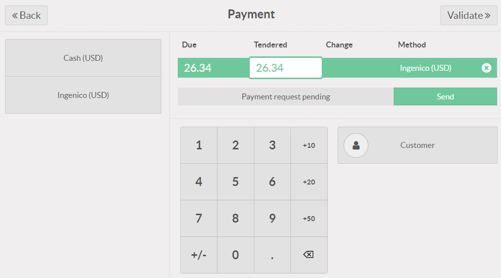
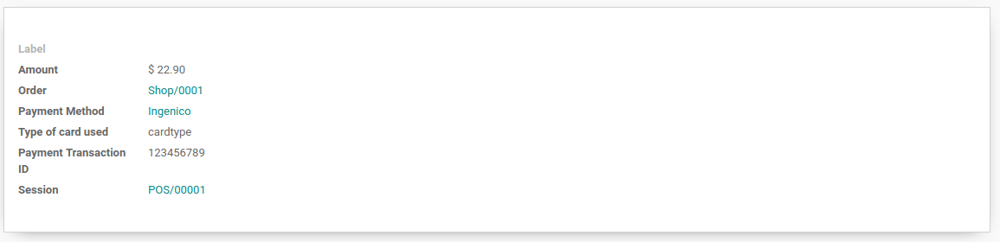

Ingenico¶
Connecting a payment terminal allows you to offer a fluid payment flow to your customers and ease the work of your cashiers.
Important
Ingenico payment terminals require an IoT Box.
Ingenico is currently only available in Belgium, the Netherlands and Luxembourg.
Odoo works with the Ingenico Lane/, Desk/, and Move/ payment terminals as they support the TLV communication protocol through TCP/IP.
Configuration¶
Connect an IoT Box¶
Connecting an Ingenico payment terminal to Odoo is a feature that requires an IoT Box. For more information on how to connect an IoT Box to your database, please refer to the IoT documentation.
Configure the Lane/Desk/Move 5000 terminals for Ingenico BENELUX¶
Press the function button (F on Lane/5000, ⦿ on Desk/5000 and Move/5000).
Go to and enter the settings password.
Select Change Connection and press OK on the next screen.
Select TCP/IP and IP-address.
On the next screen, enter the IP address of your IoT Box.
Enter
9000as port number and press OK on the next screen.
At this point, the terminal restarts and should be displayed in your IoT Box form in Odoo.

Configure the payment method¶
Enable the payment terminal in the application settings and create the related payment method. Set the journal type as Bank and select Ingenico in the Use a Payment Terminal field. Then, select your terminal device in the Payment Terminal Device field.

Once the payment method is created, you can select it in your POS settings. To do so, go to the POS’ settings, click Edit, and add the payment method under the Payments section.
Pay with a payment terminal¶
In your PoS interface, when processing a payment, select a Payment Method using a payment terminal. Check that the amount in the tendered column is the one that has to be sent to the payment terminal and click on Send. When the payment is successful, the status will change to Payment Successful.
If you want to cancel the payment request, click on cancel. You can still retry to send the payment request.
If there is any issue with the payment terminal, you can still force the payment using the Force Done. This will allow you to validate the order in Odoo even if the connection between the terminal and Odoo has issues.
Note
This option will only be available if you received an error message telling you the connection failed.
Once your payment is processed, on the payment record, you’ll find the type of card that has been used and the transaction ID.
